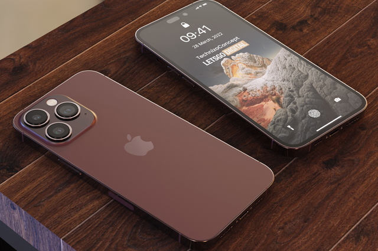
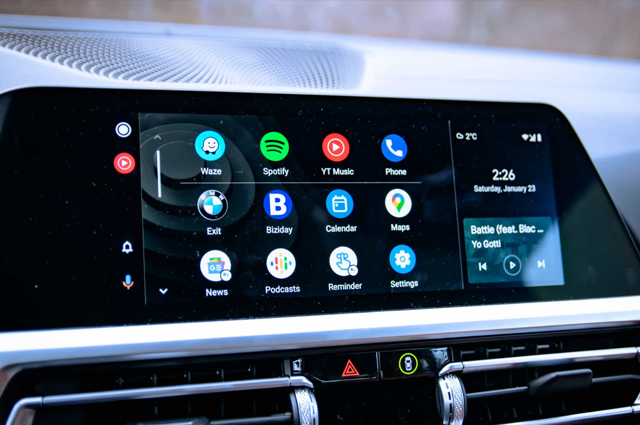

Amazfit Band 7: uma Mi Band 7 com tela melhor e Alexa
Postado em 10 de Março de 2022
A Amazfit Band 7 tem como proposta atingir um público que quer um dispositivo simples e eficiente para auxiliar na prática de atividades físicas e monitoramento de saúde, utilizando uma Smartband leve e acessível.
Um dos principais destaques é (além do o sensor SpO2 com rastreamento contínuo) a tela Always On, juntamente com o suporte à assistente Alexa da Amazon.
45% dos usuários devem continuar com seus atuais iPhones
Postado em 20 de Março de 2022 
A SellCell fez uma pesquisa com 2.500 usuários de iPhone dos Estados Unidos, envolvendo questões sobre compras para o Natal, opiniões sobre a linha de produtos, entre outros tópicos. Os resultados revelam percepções interessantes quanto ao momento atual, bem como em relação ao futuro.
Inicialmente, perguntou-se quais produtos da Apple as pessoas comprariam no Natal. A resposta vencedora foi — sem surpresas — iPhones, com 37,4% das respostas. Em segundo lugar, refletindo a crise econômica mundial e alta inflação, ficou não comprar nada de tecnologia, com 27,2%; a resposta “não tenho dinheiro para comprar algo” teve 13,4% de abrangência. Outras respostas foram AirPods (18,7%), Apple Watch (16,3%) e iPad (15,7%).
Telemóveis antigos deixarão de ter acesso ao Android Auto
Postado em 20 de Março de 2022 
AGoogle confirmou no início do ano que seria recomendado aos utilizadores do Android Auto passarem a ter um telemóvel com (pelo menos) a versão Android 8 do sistema operativo da empresa. Agora, parece que a tecnológica de Mountain View está a tomar medidas mais rígidas para levar os utilizadores a atualizarem os respetivos dispositivos.
Como conta o site 9to5google, parece que todos os utilizadores que tenham telemóveis com versões mais antigas do Android verão o acesso cortado ao Android Auto. Os utilizadores que tenham telemóveis com versões mais antigas do Android verão surgir uma mensagem a indicar que deve ser feita uma atualização antes de continuar a usar o Android Auto.
Sonic viaja pelo multiverso no mais recente trailer para Sonic Prime
Postado em 20 de Março de 2022
O Netflix começou a transmitir um novo trailer para a série Sonic Prime, o qual antecipa um pouco mais da história, que retratará uma viagem pelo multiverso e um embate contra um Eggman nunca antes visto.
O Sonic, bem como algumas das mais importantes personagens da franquia, como Knuckles e Tails, chegam ao Netflix no dia 15 de dezembro, momento a partir do qual Sonic Prime será adicionado ao catálogo.
Postagens Recentes
Telemóveis antigos deixarão de ter acesso ao Android Auto
AGoogle confirmou no início do ano que seria recomendado aos utilizadores do Android Auto passarem a ter um telemóvel com (pelo menos) a versão Android 8 do sistema operativo da empresa. Agora, parece que a tecnológica de Mountain View está a tomar medidas mais rígidas para levar os utilizadores a atualizarem os respetivos dispositivos.
Leia MaisAmazfit Band 7: uma Mi Band 7 com tela melhor e Alexa
A Amazfit Band 7 tem como proposta atingir um público que quer um dispositivo simples e eficiente para auxiliar na prática de atividades físicas e monitoramento de saúde, utilizando uma Smartband leve e acessível.
Leia MaisCategorias
Sobre Technismo
Technismo é um blog opensource feito por pessoas que amam tecnologia.